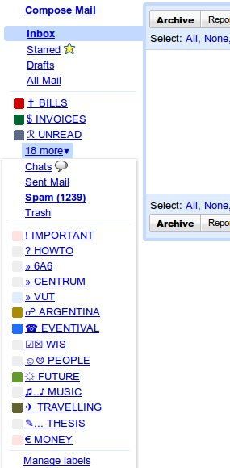

Jakou má maminka nosnost
odhalí náhodná plodnost
Lístky
Závist je zvláštní věc. Lidská emoce, touha po něčem, co má někdo jiný. Všeobecně je chápána jako špatná vlastnost, ale, jak už to tak bývá, nic není černé ani bílé. Stejně jako závist souvisí s nenávistí, může úzce souviset i s motivací. Závist je jen pocit a záleží na nás, k čemu jej využijeme, stejně jako je na nás, jestli budeme kladivem zabíjet hřebíky, nebo souseda.
Pokud někomu závidím auto, můžu totiž udělat dvě tři věci. Můžu se vydat cestou ...
 Napadl mě hezký trik, jak si zpestřit štítky v Gmailu ikonkami. Zkoušel jsem to různě už dříve – např. důležité e-maily měly štítek
[ ! ], konverzace obsahující něco k zaplacení měly třeba[ $$$ ]. Ale nebylo to úplně ono a většinu ostatních štítků jsem měl normálně, běžným textem. Navíc, když na štítek člověk klikl, nešlo si nevšimnout, že ve vyhledávání Gmail místo speciálních znaků zobrazoval různé mezery a pomlčky. Sice to fungovalo, ale dobrý pocit jsem z toho neměl.Gmail má však dnes již, empiricky ...
Tak jsem se probíral rozepsanými články a náměty na články na blog. Zjistil jsem, že pokud něco člověk nenapíše, když nad tím přemýšlí, tak už o tom nenapíše nikdy. Svět se mění moc rychle a námět prostě už potom není aktuální. Dost jsem jich smazal a zbylo mi asi 18 konceptů, převážně názorových. O čem se tedy už na tomto blogu nedočtete?
Chtěl jsem napsat ještě nějaké články o Finsku a o cestě domů, ale už je to prostě daleko ...
Moji kamarádi mají radost, že jsem přešel na Linux, tak jim přidám vodu na mlýn článkem s na první pohled masochistickým tématem. Rád používám touchpad a v Ubuntu mě vždy štvalo, že nastavení jeho ovládání nebylo nikdy moc snadné. Zapíšu si tu tedy pár poznámek, jak dotáhnout jeho ovládání k dokonalosti, protože dohledat tyhle věci je trochu problém. Pokud člověk napíše do Google slova Ubuntu a touchpad, většinou se lidé ptají na jeho vypnutí (barbaři!). Abych se vyvaroval některých komentářů ...
{kind=link}